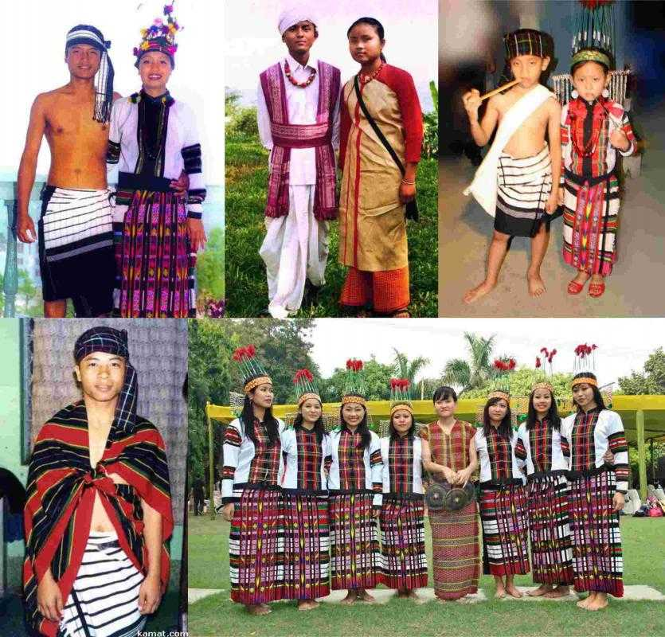

Traditional Dress of Mizoram
Men in Mizoram prefer a simple lifestyle and is apparent from their way of dressing up. The dress which is most commonly worn by men comprises of a cloth around 7 feet long and 5 feet wide. In addition to this, an extra piece of fabric is wrapped around the upper body during winter season paired up with a white-colored coat. There are white and red bands present on the sleeves of the coat along with some other intricate designs. The favorite dress of Mizo men is a red and white coloured coat. During summers, generally, a dress which one can be wrapped around the waist is preferred. To protect themselves from the scorching heat, men generally wear a turban or a pagri on their head.